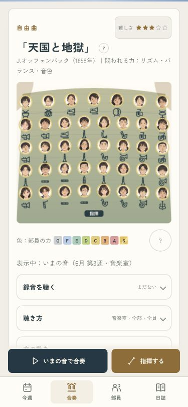
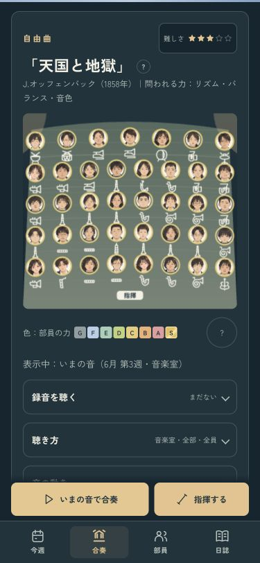

プレビューの読み込みを安定させる
起動時に画面が動かない原因の一つを、確認用サーバーのファイル取得で再現しました。接続を受け付ける余裕を増やし、同じ接続を使い回す設定へ切り替えています。
| 確認したこと | 切り替え後 |
|---|
| 起動の繰り返し | 36回すべて、32本を取得 |
| 8005番で同時取得 | 96件すべて内容が一致 |
| 通常の画面確認 | 4タブ・41音源の合奏まで確認 |
合奏を試す · 比較記録 · 起動だけの診断
起動だけの診断では、セーブと音源は使いません。通常の確認ページにも、読み込みの記録が残るようにしました。
切り替え後の合奏・ライト
切り替え後の合奏・ダーク